The Dream Chapter: Star
The Dream Chapter: Magic
The Dream Chapter: Eternity
Minisode1: BLUE HOUR

The Caos Chapter : FREEZE
The Chaos Chapter: FIGHT OR ESCAPE
Minisode2: Thursday's Child

Primeira música do grupo ♡ TXT (투모로우바이투게더) '어느날 머리에서 뿔이 자랐다 (CROWN)' Official MV
| 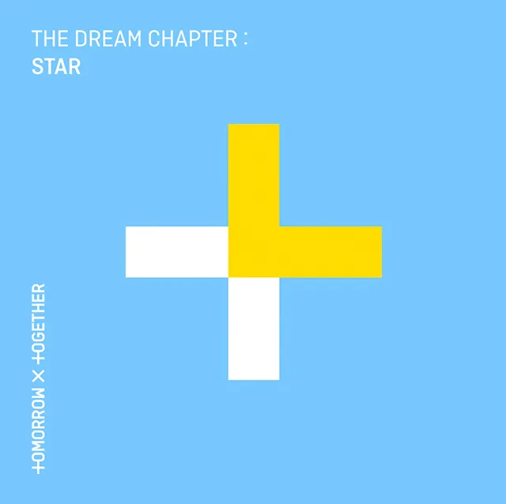 | 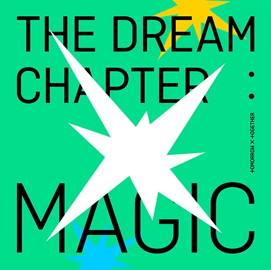 | 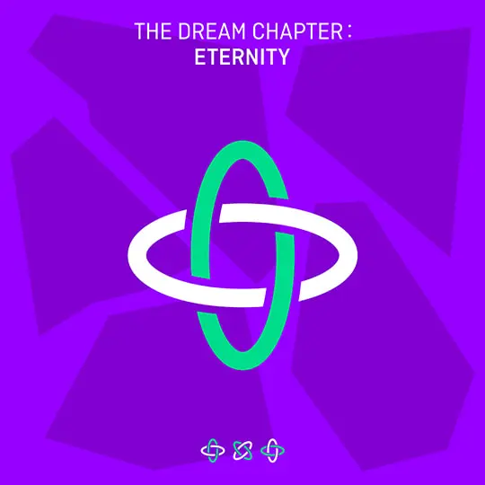 | 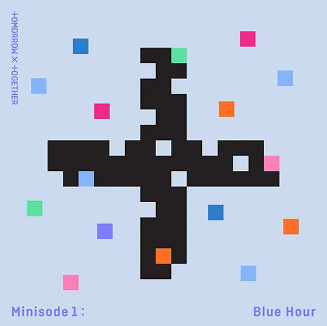 |
|
The Dream Chapter: Star |
The Dream Chapter: Magic |
The Dream Chapter: Eternity |
Minisode1: BLUE HOUR |
| 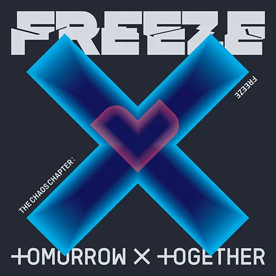 | 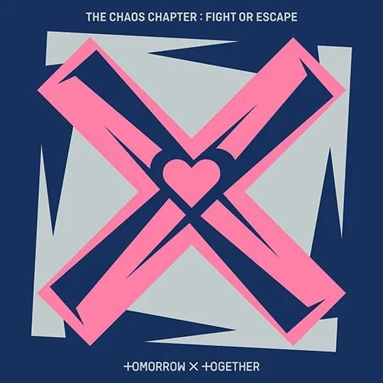 | |
|
|
The Caos Chapter : FREEZE |
The Chaos Chapter: FIGHT OR ESCAPE |
Minisode2: Thursday's Child |
A comunidade de fãs é a parte fundamental da carreira de um artista, sendo assim não pode faltar na carreira do Tomorrow By Together.
Produções externas como:
Uma HQ onde narra-se as aventuras do TXT enquanto um grupo de K-pop que vive em um mundo onde a magia faz parte da realidade. Um dia, eles vão descobrir que possuem habilidades adormecidas e terão que aprender a lidar com tais poderes e responsabilidades.
|
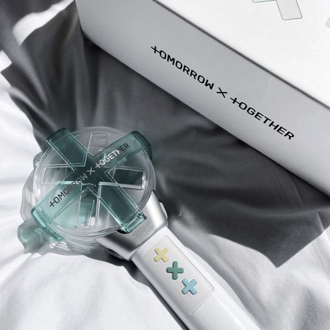
Lightstick do TXT ♡ |
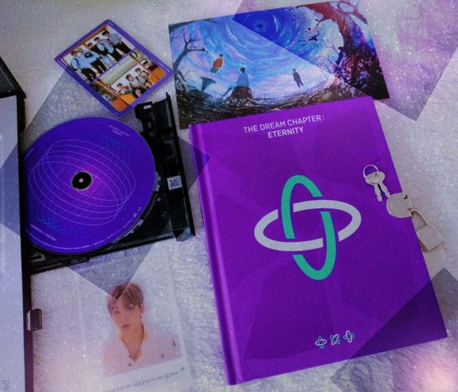
Álbum cinemático do TXT♡ |
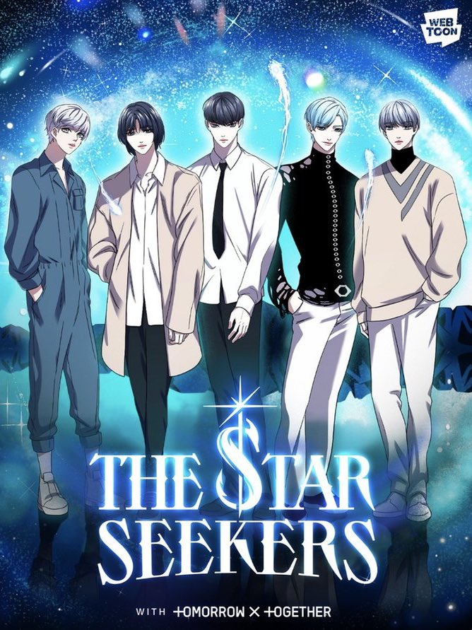
Webtoon TXT- The Star Seekers ♡ |
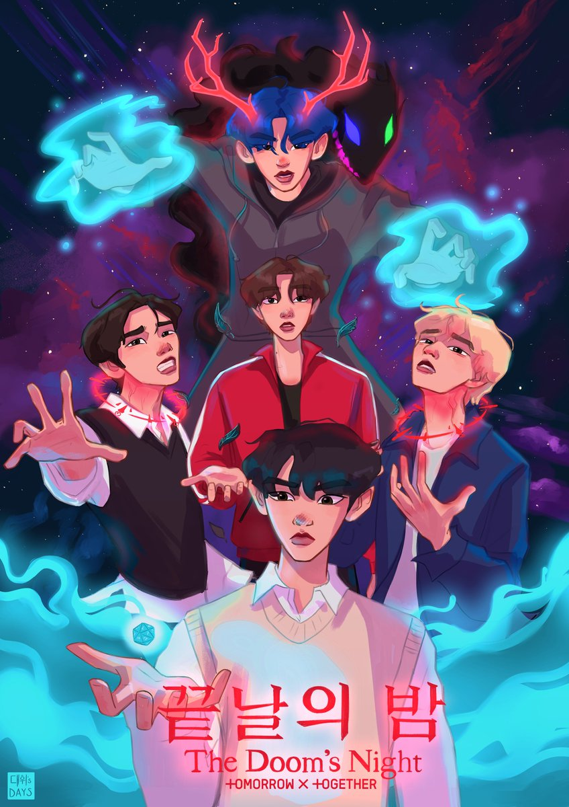
Animação TXT- The Dooms Night ♡ |
A formação oficial do grupo conta com 5 membros, sendo eles:
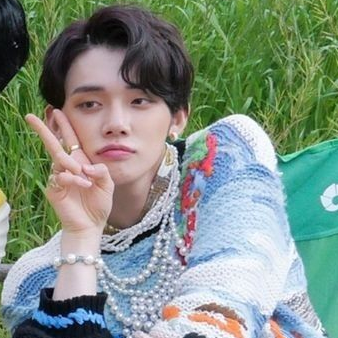
Choi Yeonjun |
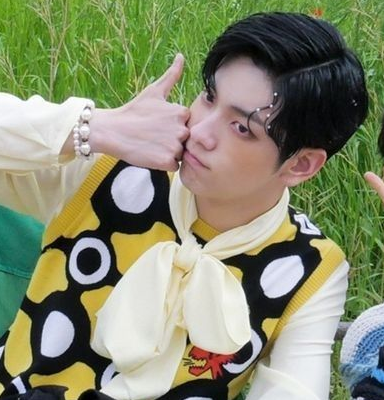
Choi Soobin |
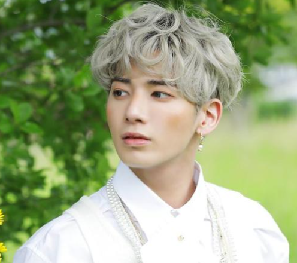
Kang Taehyun |
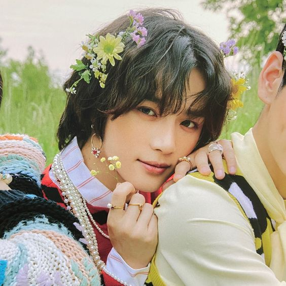
Choi Beomgyu |
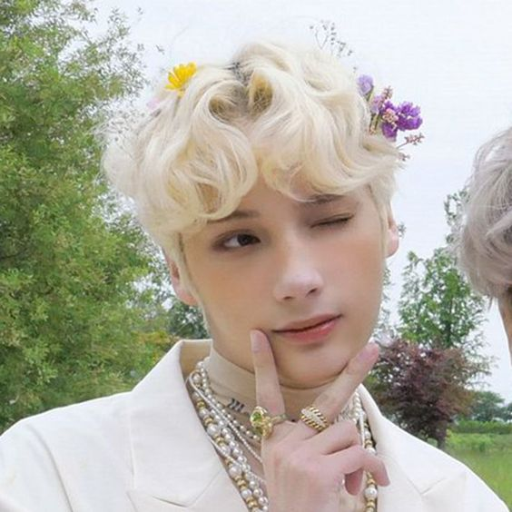
Huening Kai |